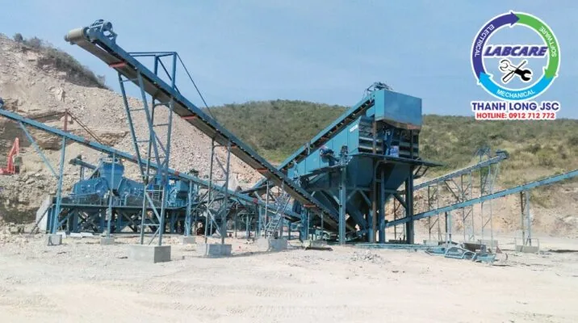

Hiện nay, trên thị trường Việt Nam có rất nhiều đơn vị thương mại và sản xuất máy nghiền hàm uy tín. Người bán ai cũng nói hãng sản xuất và mẫu mã máy của họ là tốt nhất, bền và giá cả hợp lý nhất. Bài viết dưới đây chia sẻ thông tin các nhà cung cấp máy nghiền hàm uy tín nhất thế giới. Đáp ứng nhu cầu tìm kiếm báo giá, nhằm mục đích và hiệu quả khi lựa chọn đầu tư trạm nghiền đá và cát.
Không nghe lời ai cả, hãy tự mình khám phá kiến thức về máy nghiền đá. Và lựa chọn trạm nghiền có giá thành sản xuất thấp nhất. Nên cạnh tranh về chi phí sản xuất, không phải cạnh tranh giá cả.
Như đã đề cập trước đó nhiều công ty mới đã xuất hiện, với các nhà máy đặt tại Malaysia và Trung Quốc. Nhưng bán với giá cao dưới nhãn hiệu của các thương hiệu Mỹ và Đức, hoặc công nghệ của Mỹ và Đức. Vì vậy, trong quá trình lựa chọn và đầu tư một chiếc máy nghiền hàm. Chúng tôi khuyên bạn, nên dành thời gian tìm hiểu và nắm rõ một cách chi tiết nhất có thể. Việc xem xét kỹ bản vẽ kỹ thuật và thiết bị máy nghiền hàm thực tế của mỏ trước khi ký hợp đồng. Lắp đặt cho khách hàng là điều cực kỳ quan trọng đối với một công ty uy tín.
1. Superior – Thương hiệu đến từ Mỹ – đơn vị máy nghiền hàm uy tín duy nhất bảo hành trên 24 tháng
Máy nghiền hàm Superior do Thanh Long JSC Cung cấp
Là một trong những nhà sản xuất máy nghiền đá cấp quốc gia triệu đô, với nền tảng kỹ thuật khóa học số một tiên trên thế giới. Nhà sản xuất máy nghiền hàm Superior xuất sắc, xứng đáng đứng đầu danh sách.
Với lịch sử hình thành từ năm 1972, Superior được biết đến như một nhà sản xuất băng tải di động sáng tạo. Họ đã trải qua rất nhiều khó khăn, và thay đổi từ nhân sự cốt lõi. Nhưng họ vẫn không ngừng học hỏi để có được vị trí như bây giờ. Superior vẫn là đơn vị uy tín nhất trong lĩnh vực sản xuất máy nghiền hàm Hoa Kỳ, từ chất lượng đến giá cả.
Với trình độ công nghệ cải tiến và giá cả cạnh tranh hiện nay. Các mỏ đá có trữ lượng trên 3 năm nên đầu tư đầy đủ dây chuyền sản xuất của Superior. Ưu điểm của trạm nghiền này là:. Tiết kiệm điện năng, mạnh mẽ và bền, phù hợp với cường độ đá cứng và tiết kiệm vật liệu tiêu hao. Nếu bạn muốn chọn một dây chuyền sản xuất đá cát hiệu quả. Về công suất nghiền với thời gian ngừng hoạt động tối thiểu, và thu hồi vốn nhanh nhất thì đây là lựa chọn hàng đầu.
2. Metso Phần Lan – lựa chọn số khi muốn có báo giá máy nghiền hàm uy tín hợp lý và cạnh tranh nhất.
Metso với 150 năm kinh nghiệm hiện có 4 nhà máy tại Pháp, Phần Lan, Ấn Độ và Trung Quốc . Với hiệu suất nghiền cao, tiết kiệm điện. Trọng lượng nhẹ hơn, hoạt động liên tục 24/24 giờ là những điểm mạnh của dây chuyền nghiền này. Metso hiện chiếm 45% thị phần trên thế giới, là nhà sản xuất máy nghiền bán chạy nhất. Các mỏ ở Việt Nam cũng sử dụng thiết bị nghiền của Metso với số lượng lớn. Máy nghiền hàm và máy nghiền cát VSI, là hai sản phẩm bán chạy nhất trên thị trường thế giới và Việt Nam. Theo ghi nhận, các mỏ ở Bình Phước, Ninh Thuận. Đồng Nai, Quảng Nam. Bình Dương, Bình Thuận. Bình Dương, Bà Rịa Vũng Tàu. Kiên Giang, An Giang. Đà Nẵng, Quảng Ngãi. Lạng Sơn, Cao Bằng và các nơi khác đều có thiết bị và dây chuyền sản xuất Metso.
Theo kinh nghiệm của những người đã từng sử dụng thiết bị nghiền Metso, thì chi phí nguyên liệu cao. Chi phí đầu tư ban đầu hơi cao hơn các thương hiệu khác. Thời gian đặt hàng lâu, nên việc sản xuất đôi khi gặp một số khó khăn nhất định. Nếu yêu thích máy Metso, thì chủ mỏ hoàn toàn nên lựa chọn máy Shaorui. Công ty con liên doanh với Metso đặt tại Trung Quốc. Với cấu hình và chất lượng tương đương, nhưng giá thành tốt hơn hẳn.
3. Shaorui (SRH)– part of Metso. Sự lựa chọn hoàn hảo nếu muốn sử dụng công nghệ Châu Âu với chi phí đầu tư tốt nhất
Máy nghiền hàm Shaorui (SRH)– part of Metso do Thanh Long JSC Cung cấp
Tuy thành lập gần 30 năm, nhưng là hãng sản xuất máy nghiền hàm uy tín số một Châu Á. Là công ty con của Metso tại Châu Á, Shaorui được thừa hưởng triết lý thiết kế của Metso. Và được hiệu chỉnh theo tiêu chuẩn EU / G7, dưới sự giám sát của các kỹ sư Metso. Nên sản phẩm sản xuất ra có chất lượng rất cao, về độ bền và năng suất vượt trội hơn hẳn so với máy móc Nhật Bản, Hàn Quốc. Hoặc các nhà sản xuất Trung Quốc khác trên thị trường.
Đặc biệt
các máy nghiền hàm SJ, côn bán thủy lực SC hay côn thủy lực SHR SG và SCH chạy rất hiệu quả. Cho ra chất lượng đá rất đẹp, và khả năng chống mài mòn cao. Với lợi thế về giá cả, chất lượng tương đối tốt. Đặc biệt là đội ngũ kỹ thuật bảo trì hùng hậu, đây là đơn vị có nhiều dây chuyền sản xuất nhất Việt Nam. Thay vì đầu tư vào các loại rác từ Nhật Bản hoặc Minyu, bạn chắc chắn nên chọn SRH vì độ bền và chi phí sản xuất thấp hơn.
Hiện tại máy nghiền đá của SRH được lắp đặt rất nhiều ở Bình Dương, Đồng Nai. Hà Nam, Hòa Bình. Quảng Bình, Tuyên Quang… Chúng tôi tin rằng nếu trong vòng đời từ 4 đến 5 năm, thì sử dụng máy nghiền của Shaorui cũng là 1 sự lựa chọn tốt. Hãy cân nhắc khi lựa chọn báo giá máy nghiền đá cho dự án của bạn.
Liên hệ với đại lý của Shaorui nơi gần nhất để tìm hiểu thông tin và tư vấn cụ thể hơn về báo giá
4. Sandvik – Thụy Điển lựa chọn số 4 khi tìm kiếm báo giá và tư vấn máy nghiền hàm

Ra đời sau Metso, tuy nhiên hãng máy từ Thụy điển này vươn lên thật sự mạnh mẽ. Họ có có hệ thống phân phối hoạt động rộng tại 130 quốc gia, các sản phẩm thế mạnh tập trung ở lĩnh vực như:. Khoan, thiết bị cắt, đặc biệt là các giải pháp nghiền sàng cho ngành khai thác mỏ.
Giống như Metso , tất cả các thiết bị Sandvik đều tuân thủ tiêu chuẩn EU / G7. Với cấu trúc nhỏ gọn, và các tính năng thông minh. So với Metso, thì máy của Sandvik trông lớn hơn về ngoại hình. Trọng lượng cũng nặng hơn máy của Metso.
Tại Việt Nam hiện nay, Sandvik có rất nhiều thiết bị khoan còn về máy nghiền hàm thì rất ít. Do giá khá cao và chưa có dịch vụ bảo hành sau bán hàng. Nếu chủ mỏ đam mê công nghệ, có thể chọn Sandvik như một giải pháp. Nếu so về giá thành, máy Sandvik hoàn toàn cạnh tranh với máy nghiền Nhật bãi hay Đài Loan cũ về điện năng hay độ bền bỉ.
Nếu yêu thích công nghệ, và muốn khám phá cái mới. Thì cũng có thể cân nhắc báo giá máy nghiền đá của Sandvik.
Hãy liên hệ với chúng tôi, tư vấn và báo giá miễn phí: 0912.712.772
Thanh Long JSC chuyên cung cấp
- Trạm nghiền cát/đá: Máy kẹp hàm, máy nghiền côn, sàng rung phân loại, máy nghiền cát, trạm nghiền đá di động, …
- Công nghệ rửa/tách: Máy rửa cát theo module, sàng rung tách nước, máy tách cát mịn, máy thu hồi cát mịn,..
- Thiết bị phụ tùng, vật tư: Dao nghiền, lưới sàng, má kẹp, nón côn,...
Kênh video Youtube:Thế giới máy nghiền đá Thanh Long JSC
Website: https://thegioimaynghienda.com
#bn